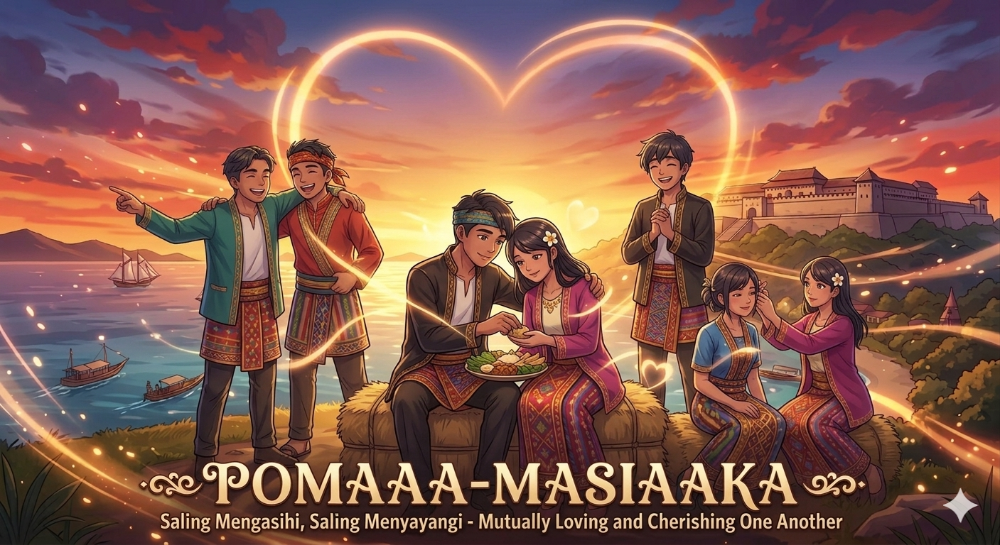
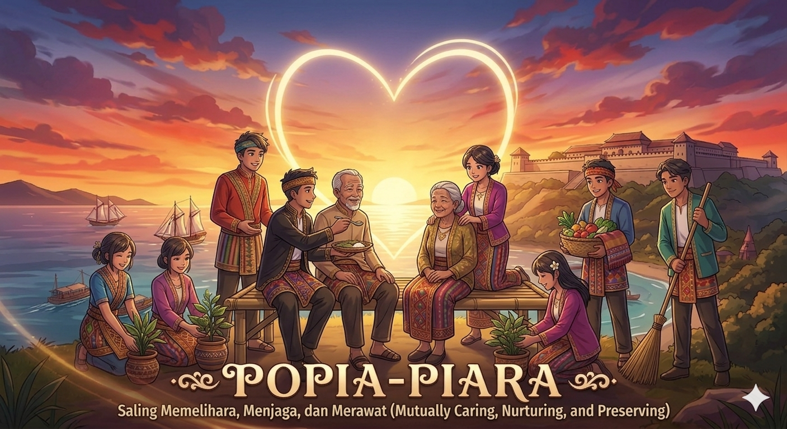
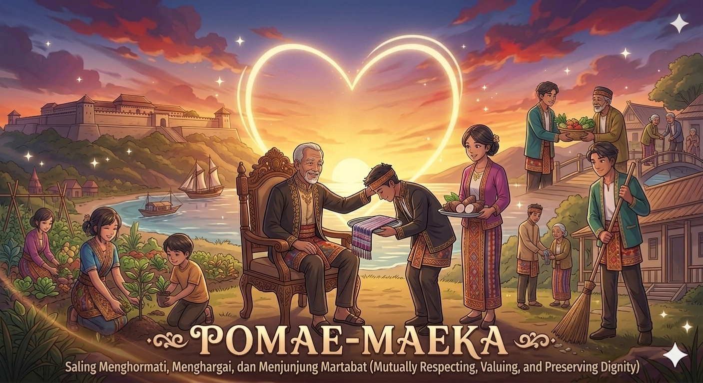
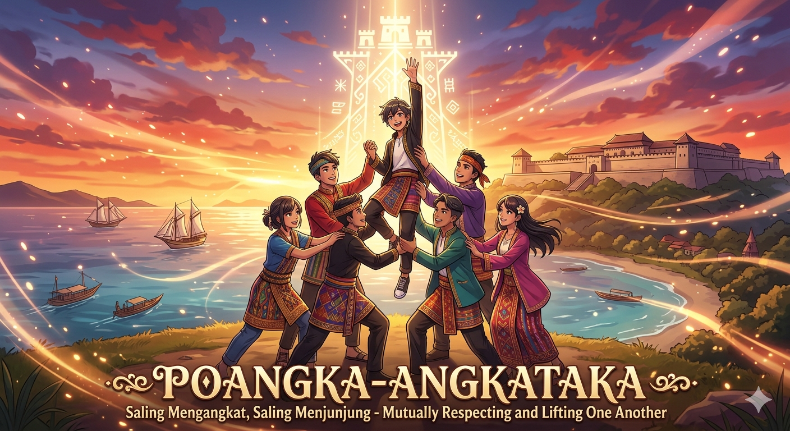
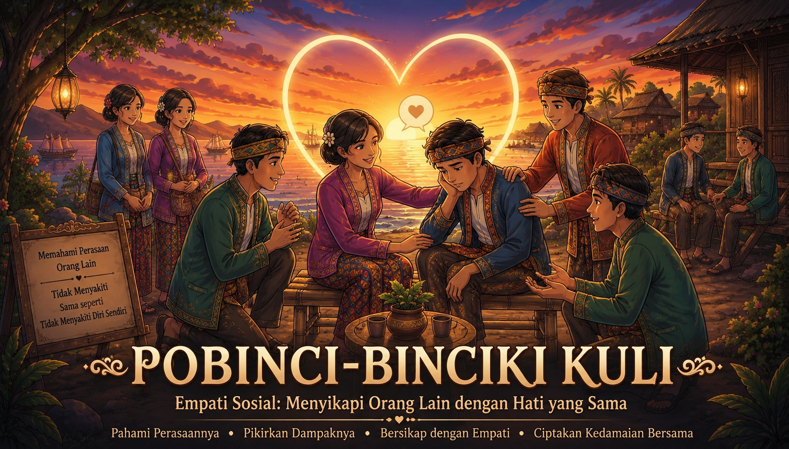

Seseorang mengalami perlakuan yang mempermalukan di depan umum. Respons yang paling tepat dapat dipilih pada situasi berikut.
Kemampuan memahami perasaan orang lain termasuk dalam nilai...

Nilai yang mengajarkan saling menyayangi antar sesama manusia.

Nilai yang berkaitan dengan perlindungan dan penjagaan hubungan sosial.

Nilai yang menekankan etika dan rasa malu dalam kehidupan sosial.

Nilai utama yang berkaitan dengan martabat dan penghormatan sesama.

Nilai empati sosial yang memandang orang lain seperti diri sendiri.